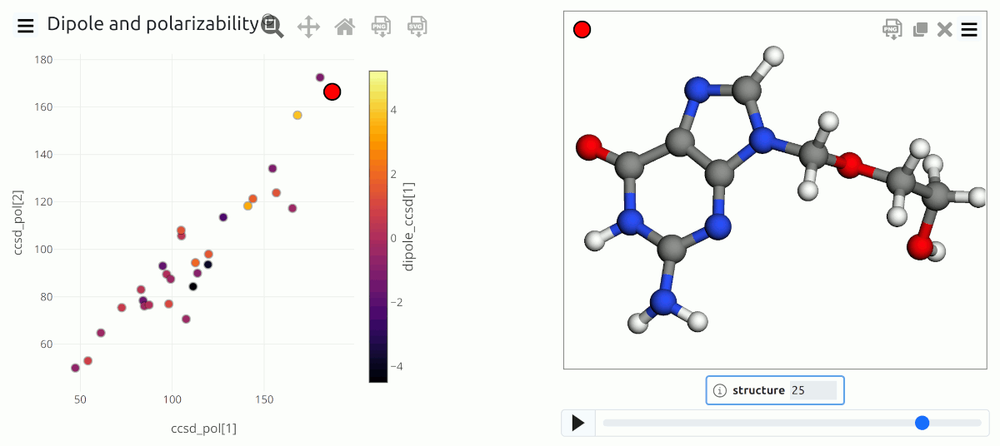
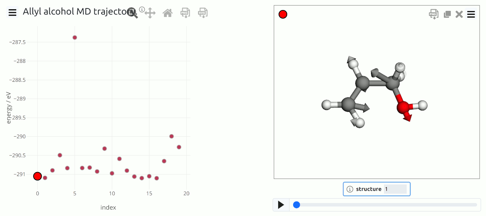
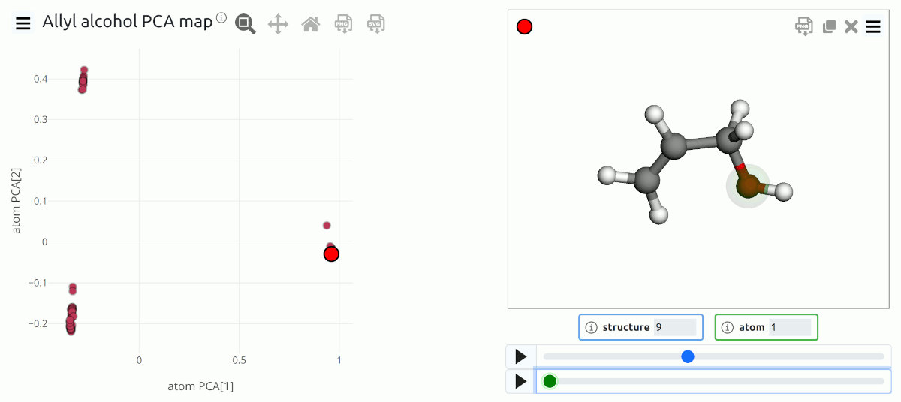
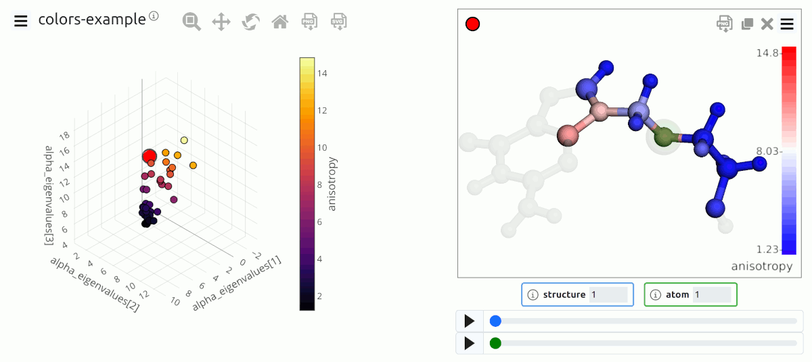
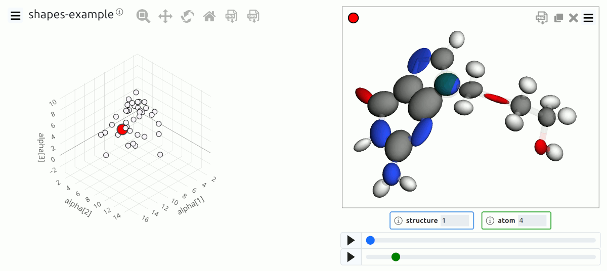

Examples¶
This page lists a few examples of visualizations based on chemiscope. Rather than providing a demonstration of a scientifc application, as for the examples on the main page, these examples consist in short Python scripts that demonstrate how to make a chemiscope viewer file that uses some particular features (e.g. atom coloring or shape visualization).
Basic usage

Simple visualization of molecular data from an ASE input file that contains both structure and properties¶
▶ Show source code...
"""
Simple chemiscope input
=======================
This example demonstrates the basic usage of the
chemiscope package, reading structures and properties
from an ASE package and preparing a chemiscope file
to visualize them. Use `chemiscope.show` in a
Jupyter notebook for interactive visualization
"""
import ase.io
import chemiscope
# load structures
frames = ase.io.read("data/showcase.xyz", ":")
# write the chemiscope input file. use `chemiscope.show` to view directly in a Jupyter environment
chemiscope.write_input(
path="showcase.json.gz",
frames=frames,
# quickly extract properties from the ASE frames. nb: if you're doing this for sharing,
# don't forget to also include metadata such as units and description
properties=chemiscope.extract_properties(frames, only=["dipole_ccsd", "ccsd_pol"]),
# it's always good to set some metadata to explain what the dataset - title is bare minimum
meta=dict(name="Dipole and polarizability"),
# it is possible to set _all_ visualization parameters with a dictionary format.
# this is a shortcut for the most basic ones
settings=chemiscope.quick_settings(
x="ccsd_pol[1]", y="ccsd_pol[2]", color="dipole_ccsd[1]"
),
)
Trajectory data

Trajectory data from a MD simulation of allyl alcohol, including visualization of force data.¶
▶ Show source code...
"""
Trajectory plotting
===================
This example demonstrates the visualization of trajectory
data. It also includes visualization of atomic forces.
The same parameters can be used with `chemiscope.show`
to visualize an interactive widget in a Jupyter notebook.
"""
import numpy as np
import ase.io
import chemiscope
# load structures
frames = ase.io.read("data/trajectory.xyz", ":")
properties = {
# concise definition of a property, with just an array and the type
# inferred by the size
"index": np.arange(len(frames)),
# an example of the verbose definition
"energy": {
"target": "structure",
"values": [frame.info["energy"] for frame in frames],
"units": "eV",
"description": "potential energy, computed with DFTB+",
},
}
# write the chemiscope input file.
chemiscope.write_input(
path="trajectory-md.json.gz",
# dataset metadata can also be included, to provide a self-contained description
# of the data, authors and references
meta={
"name": "Allyl alcohol MD trajectory.",
"description": "This dataset contains data from a DFTB+ trajectory of allyl alcohol.",
"authors": ["The chemiscope developers"],
"references": [
'G. Fraux, R. Cersonsky, and M. Ceriotti, "Chemiscope: interactive structure-property explorer for materials and molecules," JOSS 5(51), 2117 (2020).'
],
},
frames=frames,
properties=properties,
# visualize forces as vectors
shapes={
"forces": chemiscope.ase_vectors_to_arrows(
frames, "forces", scale=1, radius=0.15
)
},
settings={ # these are reasonable settings for trajectory visualization
"structure": [
{
"keepOrientation": True,
"playbackDelay": 100,
"shape": "forces", # visualize force vectors
}
]
},
)
Structure-property maps

PCA map of the atomic environments in a dataset of allyl alcohol configurations. The three group of points correspond to O environments, to the OH-bearing carbon, and to the aliphatic carbon environments.¶
▶ Show source code...
"""
Structure-property maps in chemiscope
=====================================
This example demonstrates the visualization of structures
(or environments) using data-driven descriptors of their
geometry, to cluster together similar motifs.
Here the geometric descriptors have been computed by
PCA starting from SOAP representations, but are provided
as text files to avoid external dependencies for the
example.
The same parameters can be used with `chemiscope.show`
to visualize an interactive widget in a Jupyter notebook.
"""
import numpy as np
import ase.io
import chemiscope
# load structures
frames = ase.io.read("data/trajectory.xyz", ":")
# load the SOAP-PCA descriptors. chemiscope does not provide
# analysis routines, but you can look up for instance
# scikit-matter as a package to do dimensionality reduction
# analyses.
pca_atom = np.loadtxt("data/trajectory-pca_atom.dat")
pca_struc = np.loadtxt("data/trajectory-pca_structure.dat")
# when both environments and structure property are present
# only environment properties are shown. still they can be stored,
# and future versions of chemiscope may allow switching between
# the two modes.
# NB: if there are properties stored in the ASE frames, you can extract
# them with chemiscope.extract_properties(frames)
properties = {
# concise definition of a property, with just an array and the type
# inferred by the size
"structure PCA": pca_struc,
"atom PCA": pca_atom,
# an example of the verbose definition
"energy": {
"target": "structure",
"values": [frame.info["energy"] for frame in frames],
"units": "eV",
"description": "potential energy, computed with DFTB+",
},
}
# environment descriptors have only been computed for C and O atoms.
# we use a mask and then a utility function to generate the proper
# list of environments
for frame in frames:
frame_mask = np.zeros(len(frame))
frame_mask[np.where((frame.numbers == 6) | (frame.numbers == 8))[0]] = 1
frame.arrays["center_atoms_mask"] = frame_mask
environments = chemiscope.librascal_atomic_environments(frames, cutoff=4.0)
# write the chemiscope input file.
chemiscope.write_input(
path="trajectory-pca.json.gz",
# dataset metadata can also be included, to provide a self-contained description
# of the data, authors and references
meta={
"name": "Allyl alcohol PCA map",
"description": "This dataset contains a PCA map of the C and O environments from a few frames out of a MD simulation of allyl alcohol, C3H5OH.",
"authors": ["The chemiscope developers"],
"references": [
'G. Fraux, R. Cersonsky, and M. Ceriotti, "Chemiscope: interactive structure-property explorer for materials and molecules," JOSS 5(51), 2117 (2020).'
],
},
frames=frames,
properties=properties,
environments=environments,
settings={ # these are reasonable settings for trajectory visualization
"structure": [{"keepOrientation": True, "playbackDelay": 100}]
},
)
Color atoms by property

Atom coloring based on the values of a local property¶
▶ Show source code...
"""
Atom property coloring
======================
This example demonstrates how to color atoms based on scalar properties.
Note that the same parameters can be used with `chemiscope.show` to visualize an
interactive widget in a Jupyter notebook.
"""
import ase.io
import numpy as np
import chemiscope
# loads a dataset of structures
frames = ase.io.read("data/alpha-mu.xyz", ":")
# compute some scalar quantities to display as atom coloring
polarizability = []
alpha_eigenvalues = []
anisotropy = []
for frame in frames:
# center in the box
frame.positions += frame.cell.diagonal() * 0.5
for axx, ayy, azz, axy, axz, ayz in zip(
frame.arrays["axx"],
frame.arrays["ayy"],
frame.arrays["azz"],
frame.arrays["axy"],
frame.arrays["axz"],
frame.arrays["ayz"],
):
polarizability.append((axx + ayy + azz) / 3)
# one possible measure of anisotropy...
eigenvalues = np.linalg.eigvalsh(
[[axx, axy, axz], [axy, ayy, ayz], [axz, ayz, azz]]
)
alpha_eigenvalues.append(eigenvalues)
anisotropy.append(eigenvalues[2] - eigenvalues[0])
# now we just write the chemiscope input file
chemiscope.write_input(
"colors-example.json.gz",
frames=frames,
# properties can be extracted from the ASE.Atoms frames
properties={
"polarizability": np.vstack(polarizability),
"anisotropy": np.vstack(anisotropy),
"alpha_eigenvalues": np.vstack(alpha_eigenvalues),
},
# the write_input function also allows defining the default visualization settings
settings={
"map": {
"x": {"property": "alpha_eigenvalues[1]"},
"y": {"property": "alpha_eigenvalues[2]"},
"z": {"property": "alpha_eigenvalues[3]"},
"color": {"property": "anisotropy"},
},
"structure": [
{
"color": {"property": "anisotropy"},
}
],
},
# the properties we want to visualise are atomic properties - in order to view them
# in the map panel, we must indicate that all atoms are environment centers
environments=chemiscope.all_atomic_environments(frames),
)
Add shapes to visualize data

Visualization of atomic and molecular data using vectors, ellipsoids … and more¶
▶ Show source code...
"""
Extended shape visualization in chemiscope
==========================================
This example demonstrates how to visualize structure and atomic
properties in the structure panel, using different types of
predefined shapes (ellipsoids for tensors, arrows for vectors).
The example also shows how to define custom shapes.
Note that the same parameters can be used with `chemiscope.show`
to visualize an interactive widget in a Jupyter notebook.
"""
import ase.io
import chemiscope
import numpy as np
from scipy.spatial.transform import Rotation
# loads a dataset of structures
frames = ase.io.read("data/alpha-mu.xyz", ":")
quaternions = []
# converts the arrays from the format they are stored in to an array
# format that can be processed by the ASE utilities
for a in frames:
a.positions += a.cell.diagonal() * 0.5
a.arrays["alpha"] = np.array(
[
[axx, ayy, azz, axy, axz, ayz]
for (axx, ayy, azz, axy, axz, ayz) in zip(
a.arrays["axx"],
a.arrays["ayy"],
a.arrays["azz"],
a.arrays["axy"],
a.arrays["axz"],
a.arrays["ayz"],
)
]
)
# interatomic separations (used to orient "stuff" later on)
dists = a.get_all_distances(mic=True)
np.fill_diagonal(dists, np.max(dists))
for i in range(len(a)):
nneigh = dists[i].argmin()
vec = a.get_distance(i, nneigh, vector=True, mic=True)
R = np.zeros((3, 3))
R[:, -1] = vec
quaternions.append(Rotation.from_matrix(R).as_quat())
# here we define shapes that will later be used to create the input;
# input generation can also be achieved as a single call, but in practice
# it is wise to define separate entities for better readability
# cubes with smooth shading, centered on atoms. these are created as
# "custom" shapes and then are just scaled to atom-dependent sizes
atom_sizes = {"O": 0.4, "N": 0.5, "C": 0.45, "H": 0.2}
smooth_cubes = dict(
kind="custom",
parameters={
"global": {
"vertices": [ # this list defines the vertices
[-1, -1, -1],
[1, -1, -1],
[-1, 1, -1],
[1, 1, -1],
[-1, -1, 1],
[1, -1, 1],
[-1, 1, 1],
[1, 1, 1],
],
"simplices": [ # and these are the indices of the vertices that form the triangular mesh
[0, 2, 1],
[1, 2, 3],
[4, 6, 5],
[5, 6, 7],
[0, 1, 4],
[0, 4, 2],
[1, 3, 5],
[2, 6, 3],
[1, 5, 4],
[2, 4, 6],
[3, 7, 5],
[3, 6, 7],
],
},
# the cube is used at each atomic position, only difference being the scaling
"atom": [
{"scale": atom_sizes[label]}
for label in (list(frames[0].symbols) + list(frames[1].symbols))
],
},
)
# structure-based shapes. also demonstrates how to achieve sharp-edge shading.
# requires defining multiple times the same vertices
sharp_cubes = dict(
kind="custom",
parameters={
"global": {
"vertices": [ # in order to get "sharp" edges, you need to define separate vertices for each facet
[0, 0, 0],
[0, 1, 0],
[1, 1, 0],
[1, 0, 0],
[0, 0, 0],
[0, 0, 1],
[0, 1, 1],
[0, 1, 0],
[0, 1, 0],
[0, 1, 1],
[1, 1, 1],
[1, 1, 0],
[1, 1, 0],
[1, 1, 1],
[1, 0, 1],
[1, 0, 0],
[1, 0, 0],
[1, 0, 1],
[0, 0, 1],
[0, 0, 0],
[0, 0, 1],
[1, 0, 1],
[1, 1, 1],
[0, 1, 1],
],
"simplices": [ # simplices defining the mesh - two triangles per facet
[0, 1, 2],
[2, 3, 0],
[4, 5, 6],
[6, 7, 4],
[8, 9, 10],
[10, 11, 8],
[12, 13, 14],
[14, 15, 12],
[16, 17, 18],
[18, 19, 16],
[20, 21, 22],
[22, 23, 20],
],
},
"structure": [ # structure positioning is relative to the origin of the axes
{"position": [12, 14, 12], "color": 0xFF0000},
{
"position": [15, 14, 12],
"color": 0x00FF00,
"orientation": [0.5, -0.5, 0, 1 / np.sqrt(2)],
},
],
},
)
# loads vertices and simplices from an external file
# and use it to draw a very irreverent molecule
irreverent_dict = np.load("data/irreverence.npz")
irreverent_shape = dict(
kind="custom",
parameters={
"global": {
"vertices": irreverent_dict["vertices"].tolist(),
"simplices": irreverent_dict["simplices"].tolist(),
"scale": 0.02,
},
"atom": [
{"orientation": quaternions[i].tolist()}
for i in range(len(frames[0]) + len(frames[1]))
],
},
)
# dipole moments visualized as arrows. this is just to demonstrate manual insertion,
# see below to extract directly from the ASE info
dipoles_manual = (
dict(
kind="arrow",
parameters={
"global": {
"baseRadius": 0.2,
"headRadius": 0.3,
"headLength": 0.5,
"color": 0xFF00B0,
},
"structure": [
{
"position": [12, 12, 12],
"vector": frames[0].info["dipole_ccsd"].tolist(),
},
{
"position": [12, 12, 12],
"vector": frames[1].info["dipole_ccsd"].tolist(),
},
],
},
),
)
dipoles_auto = chemiscope.ase_vectors_to_arrows(frames, "dipole_ccsd", scale=0.5)
# one can always update the defaults created by these automatic functions
dipoles_auto["parameters"]["global"] = {
"baseRadius": 0.2,
"headRadius": 0.3,
"headLength": 0.5,
"color": 0xFF00B0,
}
for d in dipoles_auto["parameters"][
"structure"
]: # center the dipoles close to the molecule
d["position"] = [11, 11, 11]
chemiscope.write_input(
"shapes-example.json.gz",
frames=frames,
properties=chemiscope.extract_properties(frames, only=["alpha"]),
shapes={
# cubes with smooth shading, centered on atoms
"smooth_cubes": smooth_cubes,
# demonstrates showing a "global" shape for each structure
"cube": sharp_cubes,
# (molecular) electric dipole
"dipole": dipoles_auto,
# atomic decomposition of the polarizability as ellipsoids. use utility to extract from the ASE frames
"alpha": chemiscope.ase_tensors_to_ellipsoids(
frames, "alpha", force_positive=True, scale=0.2
),
# shapes with a bit of flair
"irreverence": irreverent_shape,
},
settings={ # the write_input function also allows defining the default visualization settings
"map": {
"x": {"property": "alpha[1]"},
"y": {"property": "alpha[2]"},
"z": {"property": "alpha[3]"},
"palette": "seismic",
"color": {"property": ""},
},
"structure": [
{
"spaceFilling": False,
"atomLabels": False,
"atoms": False,
"shape": "alpha,dipole", # multiple shapes can be visualized at the same time!
"axes": "off",
"keepOrientation": False,
"playbackDelay": 700,
"environments": {
"activated": True,
"bgColor": "CPK",
"bgStyle": "licorice",
"center": False,
"cutoff": 0.5,
},
}
],
},
environments=chemiscope.all_atomic_environments(frames),
)